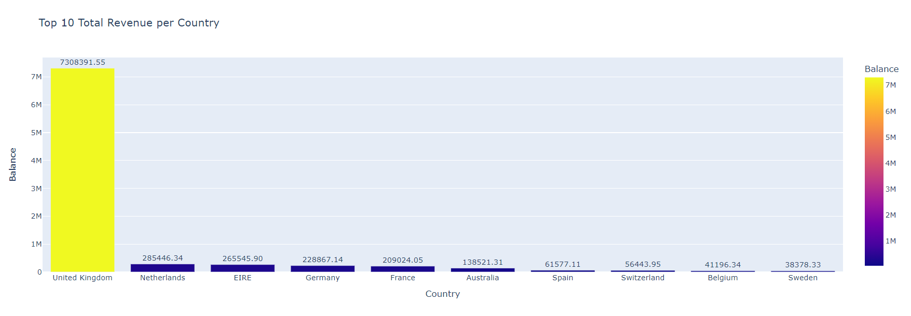
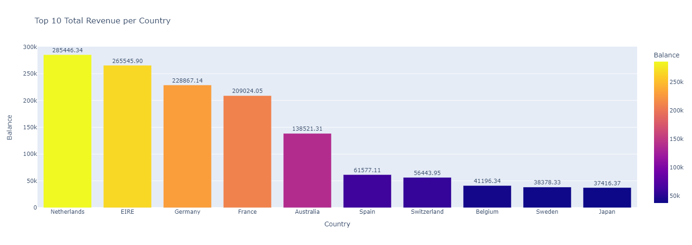
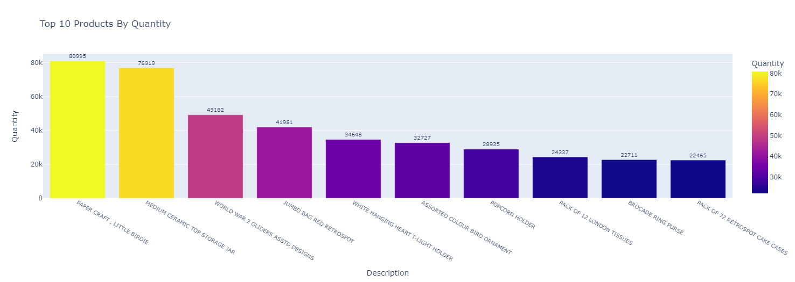
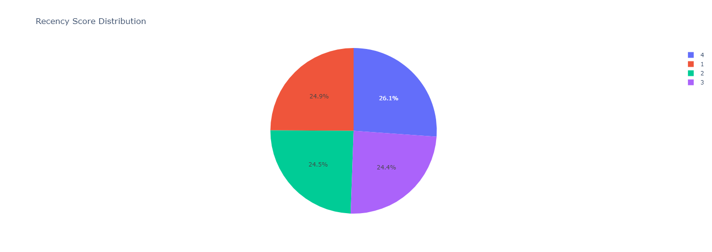
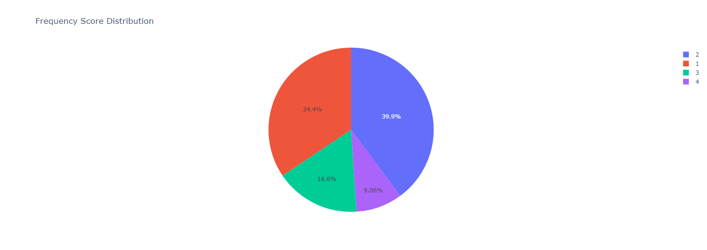
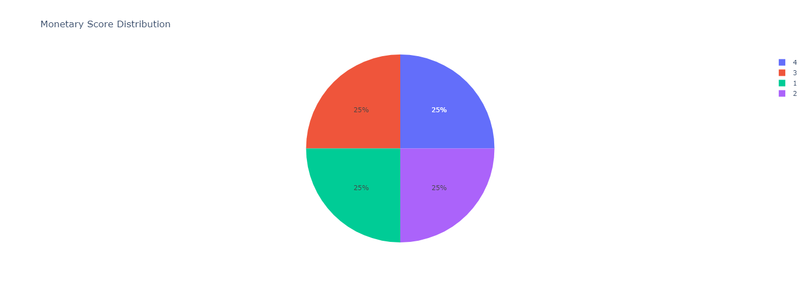
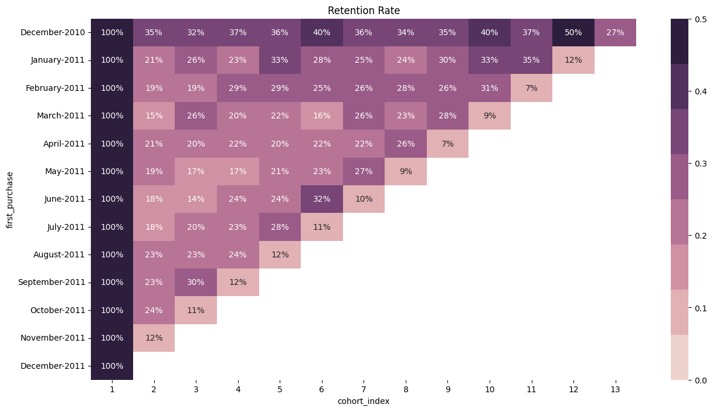
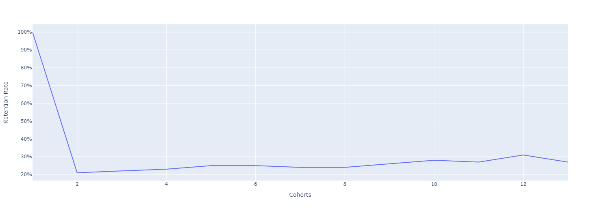

Online Retail Segmentation
Background
Our company want to do Customer Relationship Management (CRM) and to make sure that its effective, we need to properly analyze all of the customers we have. We need to properly discover which customers are potential customers and which customers are a lost customers. The analysis we need to do are Exploratory Data Analysis (EDA), RFM Analysis, and Cohort Analysis so that we can analyze all relevant customer behaviors in dataset, segment them based on their last time purchase (Recency), how many did they make a purchase (Frequency), and purchase value (Monetary) scores. Lastly, with the help of that scores, we will be able to predict their behaviors to retain our customers by helping decision makers develop CRM programs.
Project Summary
Goal
Our goal is to know our customer behaviors by doing RFM and cohort analysis.
Objectives
To find the most effective discount promotions that can be applied by our client, what we need to do in this project are :
- Cleaning raw data using various method and make sure the data is feasible to analyze.
- Conducting Exploratory Data Analysis (EDA) to get the market the market overview.
- Conducting customer's RFM (Recency, Frequency, and Monetary) analysis.
- Segmenting the customers based on their RFM score.
- Conducting cohort analysis.
- Concluding the analysis result with some recommendations in decision making.
Dataset
Customer Transactions
- InvoiceNo: Invoice number. Nominal, a 6-digit integral number uniquely assigned to each transaction. If this code starts with letter 'c', it indicates a cancellation.
- StockCode: Product (item) code. Nominal, a 5-digit integral number uniquely assigned to each distinct product.
- Description: Product (item) name. Nominal.
- Quantity: The quantities of each product (item) per transaction. Numeric.
- InvoiceDate: Invoice Date and time. Numeric, the day and time when each transaction was generated.
- UnitPrice: Unit price. Numeric, Product price per unit in sterling.
- CustomerID: Customer number. Nominal, a 5-digit integral number uniquely assigned to each customer.
- Country: Country name. Nominal, the name of the country where each customer resides.
Contains 540.000+ rows of customers transaction from several countries. The columns are :
Data Cleaning
We need to make sure the data is clean enough before analyzing the data to get unbiased analysis. The cleaning steps are :
Handle missing value
Remove negative value
After running missing value check, there are 135080 missing rows on customer ID and 1454 missing rows on description column. Then, further research is needed to decide what we need to do with rows with missing value. From the research, it turns out that rows with missing customer ids have identical values in the "gender", "age", and "income" columns. Therefore, for data consistency and to eliminate redundancy, rows with missing customer ids need to be removed from the dataset.
From the table decription above, we know that there are zero and negative values in "Quantity" and "UnitPrice" column. The quantity column with negative value and has a letter "C" as the start of the InvoiceNo. are non-sales operations (cancellations, accounting entries, stock count entries, sales discount entries, out of use, etc). The "D" in the "StockCode" column represents sales discounts, and the negative values in the "Quantity" column are a result of these discounts. In the "StockCode" column, entries starting with "C" contain information related to transportation, as evident from the "Description". In the "StockCode" column, there are rows consisting only of numbers, as well as patterns such as "BANK CHARGES," "PADS," "POST," "M," "NUMBERC," "NUMBERA," and others. The 'M' values in the "StockCode" and the "Manual" values in the description do not represent a product. It is assumed that not a sale but it may be a payment type or method or cost.
EDA (Exploratory Data Analysis)
Top 10 Country With The Highest Total Revenue
Before we start the data exploration, we need to make a column for total value per transaction that calculated from unit price and quantity.
As we can see from the plot, it is proven that the highest revenue belongs to United Kingdom. We can't clearly see the difference between the other countries as UK revenue is incompararably higher than the other countries.
Top 10 Country Without UK With The Highest Total Revenue
##Top 10 Country Without UK With The Highest Total Revenue To clearly see the difference between countries other than UK, we need to make the plot again without UK to see more precisely the difference between the countries.
There is not much difference in revenue beetween Netherland, EIRE/Ireland, Germany, and France. Then there is a huge difference between France and Australia. There is also a slight difference between the 6th and 7th place which are Spain and Switzerland and the 8th, 9th, and 10th place which are Belgium, Sweden, and Japan.
Top 10 Customer Percentage
Although the country rank in the top 10 country with the highest customer count is not exactly the same as the top 10 country with the highest revenue, the United Kingdom still hold the first place with an incompararably higher customer count than the other countries.
Top 10 Revenue Percentage
Based on the result above, it is better to focus on the United Kingdom market for RFM and Cohort analysis, as it comprises 92,6% of the dataset's customers and 84,7% of the total revenue. This choice most likely to give more consistent results.
Exploring United Kingdom Market
Here are the general overview of United Kingdom data table.
Top 10 Most Popular Product in UK
We will find the most popular product in UK by comparing how much each item was sold.
As item with the cheapest price, PAPER CRAFT , LITTLE BIRDIE is the most popular product in UK market with 80.995 products sold.
Top 10 Products by Total Revenue
It is proven that PAPER CRAFT , LITTLE BIRDIE also became a product with the highest total revenue despite its cheap price compared to the other products.
Gender Percentage
There is a huge difference in gender percentage where female customers almost twice as many as male customers.
Total Revenue by Gender
The plot is similar to gender percentage plot so it means that there is not much difference between male and females purchase value.
Age Segmentation
Among the three group of age, the majority of the customers are aged 30-54. There are not much elderly customers as it is the smallest age group in the market.
Sales by Month
There is not much difference between sales count and sales revenue per month except that there are some month where the sales count was increased but the sales revenue was decreased instead which are happened in January 2011 and July 2011. Yearly sustainable growth has been reached and highest Sales performance occurred at November 2011.
RFM Analysis
In the age of the internet and e-commerce, companies that do not expand their businesses online or utilize digital tools to reach their customers will run into issues like scalability and a lack of digital precsence. An important marketing strategy e-commerce businesses use for analyzing and predicting customer value is customer segmentation. Customer data is used to sort customers into group based on their behaviors and preferences. Recency, Frequency, Monetary Value (RFM), also known as RFM analysis, is a type of customer segmentation and behavioral targeting used to help businesses rank and segment customers based on the recency, frequency, and monetary value of a transaction.
- RECENCY (R) : Time since the last purchase
- FREQUENCY (F) : Total number of purchases
- MONETARY (M) : Total purchase value
Benefits of RFM Analysis
- Recognize our most valuable customers
- Find out potential customers
- Increase revenue
- Increase customer retention
- Learn more about the trends and behaviors of our customers
- Find out customers that are at risk
Calculating RFM
The first thing we need to do is calculating RFM of each customer. Recency calculated from day difference between customer's last purchase and reference date. Reference date is one day after the last purchase date. Frequency calculated from each customer purchase count and monetary calculated from the total purchase value of each customer.
Calculating RFM Score
The simplest way to create customer segments from an RFM model is by using quartiles. We will assign a score from 1 to 4 to each category (Recency, Frequency, and Monetary) with 4 being the highest/best value. The final RFM score is calculated by combining all RFM values. Then we will use the final RFM score for customer segmentation. Here are the segmentation :
- Recency (R) : If Recency value is equal or less than 18, then the Recency score is 4 If Recency value is between 18 and 51, then the Recency score is 3 If Recency value is between 51 and 143, then the Recency score is 2 If Recency value is more than 143, then the Recency score is 1
- Frequency (F) : If Frequency value is equal or more than 10, then the Frequency score is 4 If Frequency value is between 10 and 5, then the Frequency score is 3 If Frequency value is between 5 and 2, then the Frequency score is 2 If Frequency value is 1, then the Frequency score is 1
- Monetary (M) : If Monetary value is equal or more than 1576.585, then the Monetary score is 4 If Monetary value is between 1576.585 and 652.280, then the Monetary score is 3 If Monetary value is between 652.280 and 300.280, then the Monetary score is 2 If Monetary value is less than 300.280, then the Monetary score is 1
RFM Score Distribution
Most of the customers have RFM score of 111, which means that the have purchased only once in 144 or more days ago with transaction value less than 300.280.
According to the pie chart, customers recency score are almost evenly distributed.
Most of the customers did a purchase 2-4 times, 34.4% did a purchase only once, 16.9% did a purchase 5-9 times, and the rest did a purchase more than 10 times.
Monetary scores appear to be evenly distributed.
RFM Segmentation
- According to the Recency score, customers with a score of 1 are defined as a lost customer, customers with a score of 2 and 3 are defined as an old customer, and customers with a score of 4 are defined as a new customer.
- According to the Frequency score, customers with a score of 1 and 2 are defined as a normal customer, and customers with a score of 3 and 4 are defined as a regular customer.
- According to the Monetary score, customers with a score of 1 and 2 are defined as a normal customer, and customers with a score of 3 and 4 are defined as a top spent customer.
- Lastly, customers with a score of 4 in all aspect are defined as noble customer.
Most of the customers or around 24.9% is a lost customer which mean they made a purchase at least 144 days ago. Among all customers, only 7 of them are new regular customers which mean they made a purchase 1 day ago. Lastly, we found out that 6.6% of the customers are a noble customer which means they have a high purchase value from frequent purchases and the last time they made a purchase was 1 day ago.
Cohort Analysis
Cohort analysis involves grouping customers together based on shared characteristics or behaviors and then analyzing their behavior over time. The purpose of Cohort Analysis is to understand how different groups of customers behave or respond to certain events or changes. Cohorts are typically defined by a common attribute or characteristic, such as the month of customer acquisition or a specific marketing campaign. By tracking and comparing the behavior of different cohorts, businesses can gain insights into customer retention, engagement, and other key metrics.
Cohort Analysis is specifically useful in analyzing user growth patterns for products. In terms of a product, a cohort can be a group of people with the same sign-up date, the same usage starts month/date, or the same traffic source. Cohort analysis is an analytics method by which these groups can be tracked over time for finding key insights. This analysis can further be used to do customer segmentation and track metrics like retention, churn, and lifetime value.
Benefits of Cohort Analysis
- Find out the effectiveness of a marketing campaign in a particular time
- Find out the best strategy to maintain customers
- Find out the best marketing chanel that would bring the best result
- Learn more about the trends and behaviors of our customers
Making Cohort Index
What we need to do first is making cohort index using first transaction dates. The number of cohort index is equal to the number of date. That first purchase count in each month will be the standard to measure retention rate from the next months until the last month.
Retention Rate
Retention rate is the percentage of customers who continue to use our service or product over a predetermined period. It's an important metric, especially for subscription-based businesses, as it shows the numer of existing customers compared to total customers in the early period. In this research, we will see month to month customer retention rate. Started with new customer count in each date then we will compared the amount in the next month.
As we can see, there is already a significant decrease of customer in the second month after each first purchase date, although the number of customers in the next months tends to be stable. Some even experience an increase as happened in November 2011 or twelfth month after December 2010, which increased to 50%.
Although there was some decline in average retention rate in each index, the retention rate tends to increase compared to the early period.
Retention Rate by Gender
It shows that both female and male groups have similar retention trends. It means that there is no significant relationship between gender and customers retention.
Retention Rate by Age
- Customer with age 15-29 defined as a Young Customer
- Customer with age 30-54 defined as a Mid-age Customer
- Customer with age higher than 55 defined as an Old Customer
There is no much difference of retention rate between every age group.
Recommendation
Based on the result we got from the analysis, there are some recommendation that can help us upgrade our business in maintaining better relationship with our customer, reach our potential customer, and carry out a better customer based marketing strategies.
- According to RFM Analysis, 24,9% or the majority of customers is a lost customer which means that they made a purchase at least 144 days ago. The best thing that we can do for them is actively advertising some products through app notification or message app marketing. It is better if the product is a popular product or a product related to prior purchases. We could also make a special discount voucher for this customer segment.
- The second largest customer segment is an old customer which means that the last time they made a purchase are 18-143 days ago. These customers can also be categorized as cusomers at risk. We can maintain them by actively advertising some products through app notification or message app marketing and giving them time limited discount voucher.
- For top spent and noble customer regardless of their last purchase, we can give them discount voucher with minimum purchase or a discount for second or third product that they purchase. We can also give them cashback for a expensive products to maintain their loyalty to our retail.
- According to cohort analysis, there is a consistent decline in the retention rates of newly acquired customers. It means that we need to gain more loyalty from our entire customers. Our recommendation is to make a point system where the customer gain a certain points every time they make a purchase. The points can be used to either get a discount voucher or some grand prize.